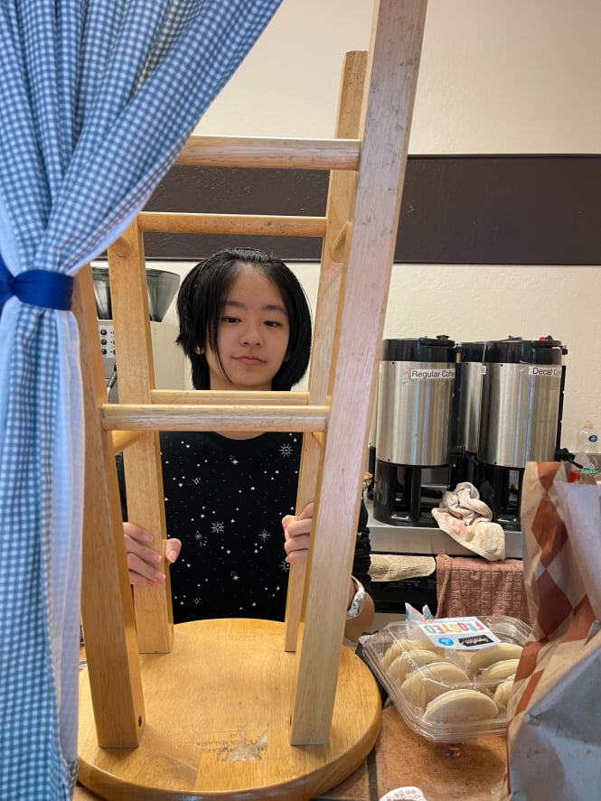
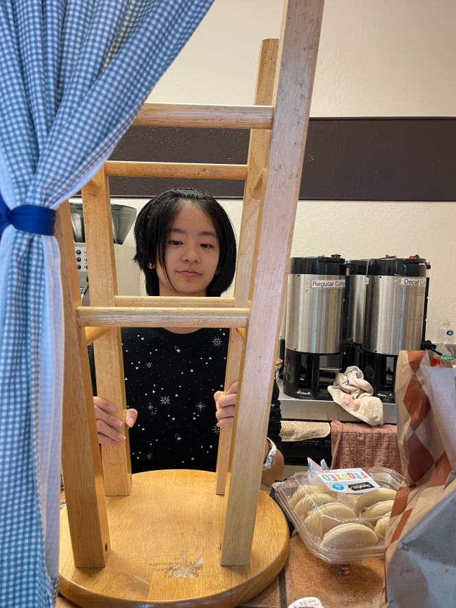

Leslie Sun
I am currently a full-time student at University of California Riverside, majoring in gender and sexuality studies. I tentatively plan to transfer my major to psychology, but it is my first year so I am still taking general education classes.
I have little hands-on work or internship experience involving my major, but I have been a teacher assistant over the summer where I instructed & assisted children in improving their reading & writing skills
For general work, I worked part-time at a local church cafe for all four years of high school and was promoted to be the cafe manager for my last two years of high school.
Experience
Teacher Assistant
• Assisted teacher in classroom preparation
• Instructed elementary students on reading and writing
• Familiarity with working with both children and school faculty
Cafe Employee & Manager
• Responsible for running the church's courtyard cafe
• Planned monthly schedule and shifts for employees
• monitered and restocked inventory and earnings
• brewed and served drinks to customers
Clarinet Section Leader
• Organized section bonding meet-ups and practice sessions
• Reviewed and provided feedback on musicality and marching formation of section underclassmen
• Guided underclassmen to also learn leadership qualities
Education
UC Riverside
Portfolio




